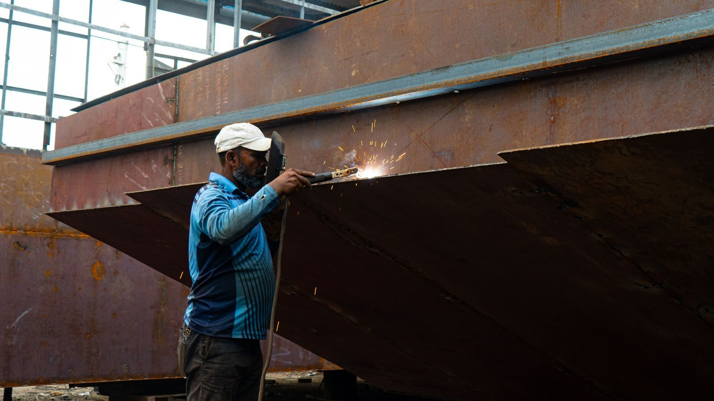
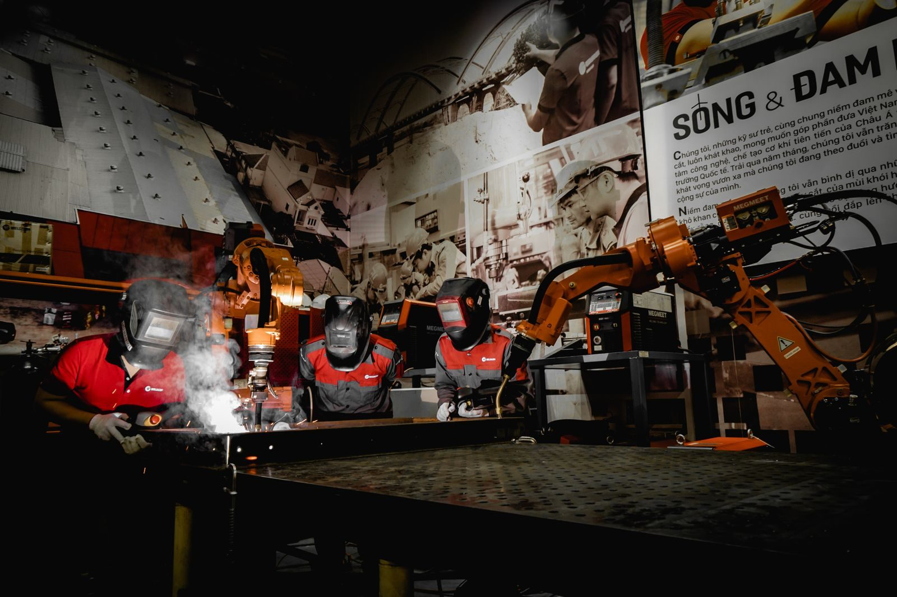

Why heat input matters
TIG welding puts a lot of heat into the joint, which distorts thin sheet and moves the dimensions you just formed. Laser welding concentrates the energy into a small spot with a narrow heat-affected zone, so thin-gauge assemblies hold their shape far better.
The distortion problem is cumulative on an assembly. A frame with twenty welds can move several millimetres overall even if each individual weld is acceptable, and correcting that afterwards costs more than the welding did.

Speed and repeatability
A laser weld is fast and highly repeatable, which is exactly what an automated line needs. Once the path is programmed, every assembly is welded identically - the main reason laser welding suits volume production of enclosures, battery trays and frames.
Repeatability also changes inspection. When the process is consistent, inspection can be sampled against a known-good reference rather than testing every assembly, which shortens the route and lowers unit cost.
Designing for the joint
Laser welding wants joints that fit: tight gaps, consistent flange widths and good access for the beam. A lap or fillet joint with a small gap welds cleanly; a badly fitting butt joint does not.
Adding a welding flange to the design costs almost nothing and makes the difference between a clean weld and a repair. Where an assembly will be laser welded, designing a defined joint rather than relying on parts meeting at an edge is the single highest-value change.
Automation is the enabler
The economics depend on moving the part under the beam accurately and repeatedly. Suppliers such as TrueSynRobotic, which builds laser welding robots and automated welding cells, will normally run a weld trial on real parts to fix the parameters - the sensible first step before committing a line to a design.
That trial is also the cheapest way to discover that a joint needs redesigning. Fixing a joint on a prototype costs an afternoon; fixing it after the fixture and program exist costs weeks.

Heat input compared across processes
The three common processes put very different amounts of energy into a joint. Manual TIG transfers heat through an arc into a wide area, and the resulting shrinkage pulls thin sheet out of shape as the weld cools. Spot welding is faster and more local, but it leaves a lap-joint mark and provides no continuous seal. Laser welding concentrates energy into a small spot with a narrow heat-affected zone, so the surrounding metal barely moves.
The difference shows up in the assembly, not the weld. A frame with twenty welds accumulates distortion, and a process that puts a fraction of the heat into each joint accumulates a fraction of the movement. That is why a switch to laser welding is often justified by dimensional control rather than by welding speed.
Joint types that suit the beam
Laser welding is at its best on lap and fillet joints where the two sheets sit in contact and the beam can fuse through the top layer into the lower one. Butt joints need the edges to meet within a fraction of the sheet thickness, because the beam is narrow and does not fill gaps by design. Edge joints work where a flange has been formed to create one.
The design implication is that the joint has to be created deliberately. Adding a welding flange to a bent part costs almost nothing in material and turns an unreliable edge contact into a repeatable lap. Where a part will be laser welded, designing a defined joint is the single highest-value change a designer can make.
Fit-up is the process constraint
Because the beam does not fill a gap, the fit-up tolerance is tighter than for arc welding. The gap between the sheets, the flange width and the alignment of the joint all have to be controlled by the parts and the fixture rather than corrected by the welder. That makes the sheet-metal tolerances upstream part of the welding process.
Practically, that means the fixture does the work. A laser cell with a good fixture produces consistent joints from parts with normal forming tolerances; the same cell without one fights every assembly. When a laser welding route is proposed, the fixture design and the joint fit-up deserve more attention than the laser parameters.

Materials and coatings that complicate it
Mild steel welds predictably. Aluminium brings high reflectivity and a fast-forming oxide, so parameters have to account for both, and the alloy matters. Galvanised sheet releases zinc vapour at the weld, which can cause porosity and requires either fume management or a joint design that welds through a gap. Stainless behaves well but needs attention to shielding to avoid discolouration on a cosmetic face.
Dissimilar metals are possible but should be treated as a designed joint with a defined intermetallic layer rather than a casual one. Where the service environment is corrosive, the joint can corrode preferentially, so the material pair belongs in the original design decision rather than in a late substitution.
Specifying and inspecting the weld
A welding specification should state the process, the joint type, the required weld size or penetration, and the inspection that applies. For a laser-welded enclosure, that is often a visual and dimensional check against a known-good reference rather than volumetric testing, because the process is consistent enough for sampling to be meaningful.
Where the joint carries load or must seal, the inspection has to prove it. That may mean a peel or chisel test on a sample, a leak test on the assembly, or a section through a production witness part. Naming the test on the drawing prevents a debate about what the weld was supposed to achieve.
When a laser cell pays for itself
The capital cost of a laser cell is justified by volume, by the cost of the distortion it removes, or by both. At low volume with a skilled welder available, TIG on a well-fixtured joint is often cheaper. As volume rises, the repeatability of an automated laser cell starts to beat the labour, and the more so where inspection can be sampled instead of applied to every assembly.
The tipping point is not a single number. It depends on how many welds are in the assembly, how tight the dimensional requirement is, and how much rework the current process generates. A shop that already spends its time straightening welded frames after TIG usually finds the case considerably easier to make.
Designing an assembly for laser welding
Give the joint a defined geometry: a consistent flange width, a controlled gap, and access for the beam along its whole length. Keep the weld path clear of features that would shadow the beam, and avoid placing a weld where the heat will alter a nearby cosmetic surface or a finished edge.
Then design for the fixture. Datum features that the fixture can locate from, and enough rigidity in the part to survive clamping without springing, are what make the automated route repeatable. These are drawing-level decisions, and they are far cheaper to make at design time than to discover when the fixture will not hold the parts.
Distortion control beyond the weld
Even a low-heat process leaves residual stress, and a long weld seam still stacks up. Sequencing the welds so their shrinkage works against itself, tacking before running a seam, and leaving a stiffening form in the part all help. Where the assembly is large, welding in a fixture that holds the finished geometry is more reliable than welding it free and correcting afterwards.
For anything that must stay flat, the honest comparison is between the cost of a fixture designed to hold the geometry and the cost of straightening every assembly. The first is paid once per program; the second is paid on every part, and it is invisible in a unit-price comparison.
Laser welding is unforgiving about fit-up, and that is the design constraint
A laser welds a very small volume of metal very quickly, which is why it distorts so little - and also why it cannot bridge a gap the way MIG or TIG can. Filler is often not used in thin-sheet laser welding, so the two edges have to meet. As a rule of thumb, the joint gap needs to stay a small fraction of the sheet thickness, well under a tenth of a millimetre on thin sheet.
The design response is to stop relying on the operator to close the gap. Tab-and-slot features, a designed step or lap, or a locating fixture built into the assembly all convert a fit-up problem into a machining problem, which is far more repeatable. Laser welding a sheet-metal assembly that was designed for MIG welding is usually a frustrating exercise in re-clamping.
Managing distortion by sequence rather than by force
Even with low heat input, welding adds heat unevenly and the part will try to move. The usual controls are a tack sequence that alternates around the assembly rather than running end to end, clamping or fixturing that holds the part in position until it has cooled, and stitch or intermittent welds where a continuous seam is not needed for strength.
The heat-affected zone is narrow in laser welding, which limits how far the metallurgy changes from the parent material, but it does not eliminate it. On thin sheet in particular, the practical limits are set by how well the joint is designed and how the assembly is held, not by the power of the machine.
Frequently asked
Is laser welding suitable for thick material?
It is strongest on thin and medium gauge, where its low heat input is the advantage. For thick sections a conventional or hybrid process is usually more economical, because laser welding depth is limited by power and the economics of the equipment.
What joint design works best?
A lap joint or a fillet joint with a small, consistent gap and a defined flange. Tight fit-up matters more than for other processes, because the beam does not fill a large gap.
Does laser welding need filler material?
Often not, particularly on thin sheet where the joint is autogenous. Where the fit-up cannot be tight, or where the metallurgy calls for it, filler wire can be added - which also makes the process more tolerant of gaps.